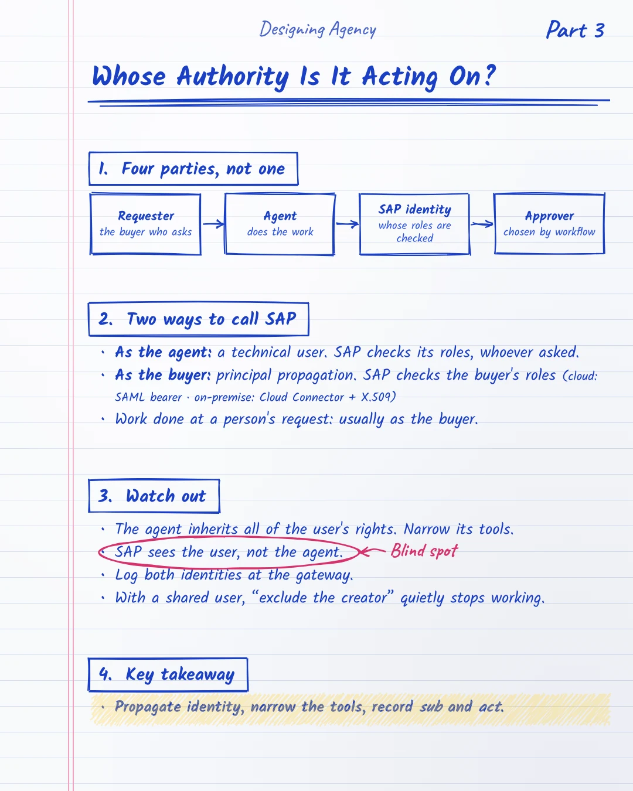

Blog / AI agents and governance / Designing Agency
Whose authority is it acting on?
Requester, agent, executing identity and approver are four parties, not one
When an agent creates a purchase order, four parties are involved, and it pays to keep them apart. The requester is the buyer who asked. The agent is the software that did the work. The executing identity is the identity the system of record believes performed the action, and whose rights it checked. The approver is the person who approves or releases it. Most agent designs blur at least two of them.
The property this part defends is simple to state: when an agent performs a consequential action, the system must be able to establish the authority under which that action was permitted. Whether the application, the agent's runtime, an identity service or a separate policy layer provides that is an implementation decision. Different platforms answer it differently, and more than one answer can be right.
How enterprise systems decide what a user may do
Most enterprise systems are role-based. A user's roles determine which functions they can start and which data they can read or change, and segregation of duties is designed into how those roles are cut, so that one person cannot, for example, both create a supplier and pay it. Users cannot give themselves access; they can only use what their roles grant.
That makes the executing identity the decisive choice. Whatever identity the agent's actions arrive under, its rights become the agent's effective authority as far as the system of record is concerned.
Two ways an agent can act
The agent always authenticates as itself to whatever it talks to first. The real design question is a different one: whose identity does the system of record execute the action under, and so whose rights does it check? There are two answers.
Diagram source (Mermaid)
flowchart TD
B["Requester asks the agent"] --> A["AI agent"]
A -->|"Option 1: the agent's own identity"| T["Agent identity<br/>a service account or<br/>workload credential"]
A -->|"Option 2: the requester's identity"| P["Delegated identity<br/>acting on behalf of<br/>the requester"]
T --> S1["System checks the<br/>agent identity's rights"]
P --> S2["System checks the<br/>requester's own rights"]Option 1: the agent's own identity. The agent uses a service account or workload credential of its own. This is simple and suits background work that acts for nobody in particular. But every action then appears under one identity, with that identity's rights, whoever asked. The requester's own limits are invisible unless something else checks them.
Option 2: the requester's identity. The agent acts on behalf of the person who asked, through some form of delegated or propagated identity, so the system of record applies that person's rights and records them as the one who acted. For work done at a person's request, this keeps the person's limits in force. But now the system of record may not know that an agent was involved at all.
Authority is an intersection
Neither option, on its own, captures what the authority actually is. The action should be permitted only if it falls inside all three of these at once:
- what the requester is allowed to do;
- what the agent has been delegated to do;
- what the task in hand requires.
Option 1 sees only the agent's side of that intersection. Option 2 sees only the requester's. The property is that something can see both, at the moment the action is taken, and record which ones were checked.
There are several ways to provide it. An enterprise gateway design from August 2026 uses OAuth 2.0 token exchange to issue a single signed token carrying both identities: sub is the user and act.sub is the agent, with each further hop adding a level, a complete, cryptographically bound delegation trail. The authors flag the most common misconfiguration: the exchange must check that the incoming token was issued to the agent, not to the gateway.1 Kalyanasundaram argues that each agent needs a unique, verifiable identity bound to an accountable owner, governed through four fundamentals: administer, authenticate, authorise and audit, built by extending established standards rather than inventing new ones.2 An application can equally check both identities itself, if it is told about both.
Borrowed authority is too much authority
Delegation has a further catch. Acting as the requester, the agent inherits all of the requester's rights, not only those the task needs. If the buyer can also release orders, so can anything acting as the buyer, unless the task scope narrows it.
Researchers at EPFL show one way to narrow it. CAPMAS maps a request to a bounded set of privileges and issues tokens that each agent can narrow further, offline, but never widen. Compared with OAuth token exchange, they report 30 times faster delegation operations and up to 3 times lower bandwidth, while cutting unnecessary privileges by 99.5% against propagating all of the user's privileges.3 The principle holds without their tooling: the agent's reach should match the task, whatever the requester could do.
Segregation of duties survives, if you keep it
Many approval processes can stop a document's creator from approving it. Which identity counts as the creator then matters. If the agent acts under the requester's identity, the requester created the order and cannot approve the agent's work on their own request. If it acts under a shared agent identity, the "creator" is the agent's account, and that protection can quietly disappear unless the approval rules know who actually asked.
What has to be true
Whatever the platform, these should hold:
- For every consequential action, the requester, the agent and the executing identity can all be established afterwards, and linked to the business document.
- The agent's reach is narrower than the requester's full rights whenever the task is narrower.
- The choice between the agent's identity and the requester's is made per action, deliberately.
- The mapping between people's identities and their accounts in each system is accurate, because delegation is only as good as that mapping.
Notes

Sources
- Suraj Kumar, Amy Wang and Srinivasan Manoharan, A Gateway Architecture for Enterprise MCP Authentication, arXiv preprint, August 2026.
- Thivaharan Kalyanasundaram, Identity and Access Management for AI Agents, CEUR Workshop Proceedings, Vol. 4257.
- Rasmus Moorits Veski, Rachid Guerraoui and David Froelicher, CAPMAS: Capability-Based Delegation of Privileges in Multi-Agent Systems, arXiv preprint, September 2026.